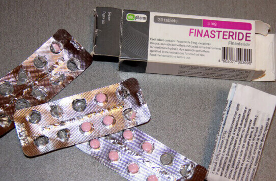
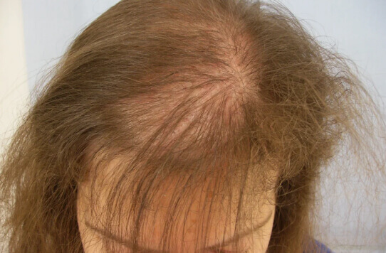
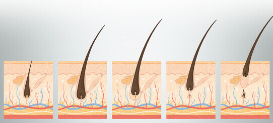
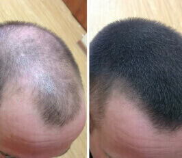
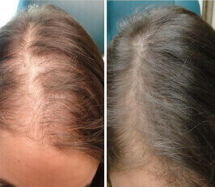
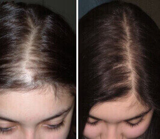
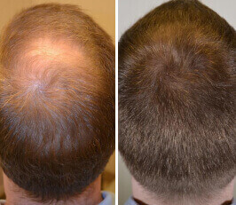

Os medicamentos para a calvície não só não ajudam, como também prejudicam a sua saúde.
8 de Março de 2020
Pesquisadores da Universidade Johns Hopkins (5º no ranking internacional de institutos de pesquisa médica) mostraram que o extrato de Serenoa repens é 78% melhor no tratamento da queda de cabelo do que as preparações farmacêuticas. Por que este medicamento seguro e eficaz não está disponível para o público em geral? Nosso correspondente especial estudou esta questão.
A finasterida é atualmente o tratamento oficial mais comum e recomendado para a alopecia. É ele que é oferecido em qualquer farmácia do mundo. A lista de contra-indicações e efeitos colaterais é impressionante.
Para começar, o principal problema é que essa medicação foi originalmente desenvolvida para tratar a prostatite, e o crescimento do cabelo foi apenas um efeito indesejado da medicação. As empresas farmacêuticas rapidamente perceberam que encontraram uma mina de ouro por acidente e correram para revalidar a medicação como um tratamento para a alopecia.
Mesmo que deixemos de lado todos os efeitos colaterais da finasterida (depressão do sistema nervoso, disfunção sexual, enxaquecas, indigestão, etc.), ela tem um sério inconveniente: é praticamente inútil para as mulheres. A medicação mostrou eficácia apenas em 3% dos casos de uso pelo sexo mais frágil. Uma grande margem de erro, não é?
Por outro lado, a Universidade Johns Hopkins há muito tempo estuda a Serenoa repens um ingrediente natural que é 100% seguro para o corpo, estimula o crescimento do cabelo e é adequado para homens e mulheres. Então, por que ainda não podemos comprar nas farmácias?
Professor Robert Milton, líder da equipe de pesquisa, profissional e honorário membro da Universidade Johns Hopkins (25 anos de experiência), concordou em responder às nossas perguntas. Um ingrediente natural que é 100% seguro para o corpo, estimula o crescimento do cabelo e é adequado para ambos os sexos. Então, por que ainda não podemos comprar nas farmácias?
Redação: Senhor Milton, conte-nos sobre o seu sucesso no tratamento da calvície, por favor!
P. Milton: Falando figurativamente, a descoberta não pode ser chamada de minha: as propriedades curativas da Serenoa repens eram bem conhecidas da população indígena da América. Esta planta é nativa da Península de Yucatán, Caribe e regiões do sul dos Estados Unidos. Você provavelmente já ouviu falar que a Serenoa repens é usada em muitos " em rituais "porque mesmo entre os índios, uma cabeça cheia de cabelos sempre foi considerada um sinal de saúde e força de caráter." Para estimular o crescimento do cabelo, eles usaram extratos de Serenoa . Usamos essas informações quando iniciamos a pesquisa.
Redação: Há quanto tempo o senhor começou a fazer trabalhos científicos?
P. Milton: Há mais de 15 anos. No começo não tínhamos financiamento e avançamos bem devagar. Mas quando os primeiros resultados foram obtidos, a universidade nos alocou um orçamento.
Redação: Sobre que resultados o senhor está a falar?
P. Milton: Uso diário extrato da palmeira de serenoa garante uma remissão estável na luta contra a calvície em um mês. A queda de cabelo para em 100%, o cabelo começa a crescer em cerca de 73% da área danificada da cabeça. Após 3 meses de uso, você não consegue mais distinguir visualmente onde estavam as manchas calvas. Eu acho que este é um resultado incrível.

Redação: O que torna possível alcançar resultados tão incomuns?
P. Milton: Os folículos capilares são estimulados Ingredientes ativos não apenas desperta bulbos dormentes, mas também promove a regeneração de folículos doentes. Esse processo pode ser comparado a sementes caindo no solo. Se não forem regados ou fertilizados, o solo ficará descoberto. Mas quando chove e o sol brilha, eles começam a brotar.
Redação: Incrível! Existem vantagens desse método em relação à finasterida?
P. Milton: Alguma vantagem? Você está a brincar? Nosso o medicamento é muitas vezes superior a todas as contrapartes de farmácia! Este é um assunto delicado, eu só quero gritar sobre isso! Tenho vergonha das nossas farmácias, porque alimentam as pessoas com medicamentos inúteis e muito nocivos.
-

Pedro Alonso, 48 dias de uso
-

Karen Paes, 24 dias de uso
-

Elena Salomão, 62 dias de uso
-

Diego Ramiro, 36 dias de uso
Além disso, a finasterida é totalmente ineficaz para as mulheres, pois estimula exclusivamente os hormônios de crescimento masculinos. Além disso, tem muitos efeitos colaterais, e os problemas do sistema reprodutor são os mais sensíveis. Por outro lado, nosso medicamento é 100% seguro, por exemplo, nós o aplicamos em crianças após a quimioterapia com queda total de cabelo (incluindo cílios). Após 6 meses, essas crianças eram indistinguíveis de seus colegas, e as meninas tinham lindas tranças.
Redação: A propósito, porque seu remédio não está disponível em farmácias, e como ele chama-se?
P. Milton: Chama-se Sirene Long&Strong System ... Na verdade, não pode ser comprado em farmácias e isso é uma barbárie. Isso ocorre porque nosso sistema é muito burocrático e os funcionários são gananciosos e mesquinhos. Temos todos os estudos de teste, patentes, certificados e licenças. Mas antes de trazer um medicamento para o mercado de massa, surpreendentemente, é necessário quebrar o monopólio das empresas farmacêuticas.
Seus interesses são ativamente defendidos em órgãos do Estado. É um processo longo, doloroso e caro. Estamos a trabalhar nisso. Infelizmente, é muito fácil perder na luta contra a ganância e a hipocrisia humana ... Meu coração parte-se de pena de todas as pessoas que têm que perder o cabelo só porque alguém ganha dinheiro com isso.
Redação: Então agora é impossível comprar o remédio?
P. Milton: Podem em único e licenciado site. Mas, infelizmente, não está disponível para todas as regiões e sua quantidade ainda é muito limitada. Estamos a tentar aumentar a produção e otimizar a logística, mas constantemente nos deparamos com um muro burocrático ...
Redação: Obrigado pelo diálogo interessante, gostaria de dizer algo de despedida aos nossos leitores?
P. Milton: Calvície não é uma sentença! Ela pode ser derrotada. E desejo a todos boa saúde e cabelos grossos. Acreditem em si mesmos, não desistam e tudo ficará bem. Basta olharem as fotos de pessoas que testaram o produto ou compraram há mais de três meses: isso não é um milagre, isso é ciência, são essas pessoas que ajudamos! Deixe-nos ajudá-los também.
Nossos editores estão sinceramente satisfeitos que a ciência não para e que existem tratamentos seguros e eficazes para a calvície. Se você se deparar com esse problema, não se desespere, você pode restaurar seu cabelo graças ao Sirene Long&Strong System! Até agora, o produto está disponível em apenas um site (Atenção! Cuidado com os golpistas!) E a quantidade é limitada. Mas acreditamos que tudo mudará no futuro.